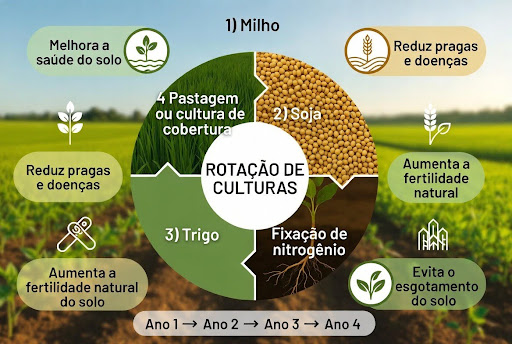

A Estrutura

A rotação de culturas é uma prática agrícola que envolve a alteração sistemática dos tipos de plantas cultivadas em uma área específica durante períodos sucessivos. Em vez de cultivar a mesma cultura repetidamente na mesma área, os agricultores adotam uma abordagem rotativa, variando os tipos de plantas de safra em safra. Essa estratégia tem o objetivo de melhorar a saúde do solo, aumentar a produtividade agrícola e controlar pragas e doenças de maneira mais eficaz. Ao adotar a rotação de culturas, os agricultores buscam otimizar o uso da terra, promover a biodiversidade no ambiente agrícola e enfrentar desafios comuns associados à monocultura, como a degradação do solo e o aumento da resistência a pragas.
Menejo
A utilização de plantas de cobertura durante a rotação de culturas desempenha um papel crucial no controle de pragas e plantas daninhas, melhora a fertilidade do solo e reduz os processos erosivos. O monitoramento integrado de pragas é uma prática antiga, com um conceito muito conhecido pelos mais diversos produtores do Brasil. Sendo algo extremamente importante para o decorrer da produção, ainda assim, é realizado muitas vezes de forma errônea, devido à falta de controle das taxas e índices desatualizados. Para um funcionamento efetivo deste meio, é necessário que o produtor entenda que existe um planejamento que vai além. É necessário saber informações não só sobre a cultura plantada, mas também sobre as pragas ali presentes, e a maneira correta que cada uma age para realizar com precisão o controle.
Uso
Na prática, em vez de plantar milho safra após safra, você pode alternar com feijão ou trigo, por exemplo. Essa diversidade no sistema agrícola reduz os impactos negativos do monocultivo: prática de cultivar uma única espécie repetidamente. De acordo com a Embrapa, as opções de rotação de culturas podem variar conforme os objetivos desejados. Algumas sugestões incluem: Produção de Palha: Aveia-preta, milheto e soja. Aumento da Reciclagem de Nitrogênio (N) e Potássio (K) para o Milho: Aveia, soja, nabo-forrageiro e milho. Controle de Doenças na Soja: Rotação de soja com soja e milho (ou soja em 2/3 da área e milho em 1/3). Descompactação Superficial do Solo, Produção de Palha, Reciclagem de Potássio (K) e Controle de Plantas Invasoras: Nabo-forrageiro seguido de milho na primavera e, em seguida, soja. Aumento da Produtividade do Milho e Melhoria da Estrutura do Solo: Soja, girassol safrinha e milho. Essas combinações visam maximizar os benefícios agronômicos e garantir a sustentabilidade das práticas agrícolas.
Técnica
A aplicação técnica exige conhecimento agronômico para combinar as plantas certas. O cálculo de fitomassa mede a quantidade de massa seca (palhada) que uma cultura produz. Ele ajuda o produtor a garantir a proteção do solo, a ciclagem de nutrientes e a formação de matéria orgânica no sistema de Plantio Direto. Além do plantio real das plantas especificadas, rotação trienal de culturas e os planos de rotação frequentemente incluem a aplicação de cal e o plantio de adubação verde. Além disso, os planos não estão gravados em pedra; são apenas diretrizes que podem ser modificadas dependendo das condições do solo e do clima. A sucessão de nutrientes no sistema de rotação de culturas é o processo contínuo de absorção, acúmulo e liberação de nutrientes por diferentes plantas ao longo do tempo. Essa dinâmica permite reciclar os elementos minerais presentes no solo e reduzir a necessidade de adubos químicos.
Resultado
Segundo estudos, cada cultura deixa uma herança química, física e biológica nos solos, tornando-os mais propícios para outros tipos de culturas, assim a utilização de mix de culturas de coberturas trará respostas muito superiores em produtividade quando comparado a monocultivos. A rotação de culturas, alternando diferentes espécies vegetais em uma mesma área, aumenta a produtividade agrícola entre 10% e 15%. Ela melhora a fertilidade e a estrutura do solo, recicla nutrientes e quebra o ciclo de pragas e doenças, reduzindo a dependência de defensivos químicos. Portanto, diante deste contexto, a implantação do mapeamento de fertilidade do solo e a correção das eficiências químicas, irão beneficiar as culturas de cobertura, visto que estas, respondem diretamente à produção de raízes e palha, conforme a disponibilidade de nutrientes de cada local na lavoura.